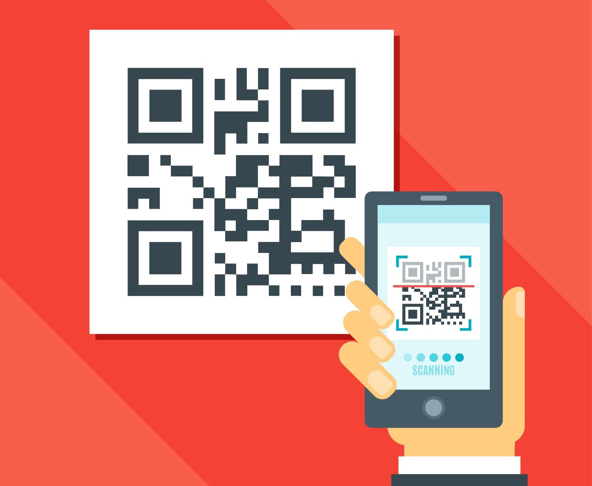

<ion-header>

  <ion-toolbar color="primary">
    <ion-buttons slot="start">
      <ion-back-button [routerLink]="['/tela-inicial']"></ion-back-button>
    </ion-buttons>
    <ion-title class="titles-toolbar">Leitura QR Code</ion-title>
  </ion-toolbar>

</ion-header>

<ion-content>

  <ion-card class="padrao-card">
    
    <ion-card-header>
      <ion-card-title class="padrao-title">Leitura do QR Code</ion-card-title>
    </ion-card-header>
    <ion-card-content class="padrao-text-justify">
      Realize a leitura do QR Code localizado em sua mesa clicando no botão abaixo e mirando a camera do seu celular
      para ele.
    </ion-card-content>
  </ion-card>

  <div class="formatacao-padrao-big-button ">
    <ion-button color="secondary" class="big-button" (click)="scanCode()">
      <ion-icon class="big-icon" name="md-camera"></ion-icon>
    </ion-button>
  </div>

</ion-content>